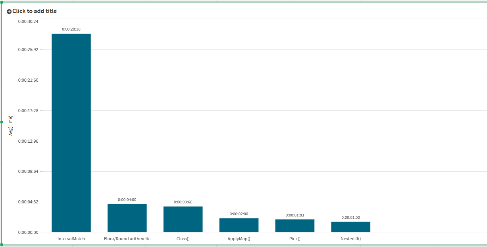
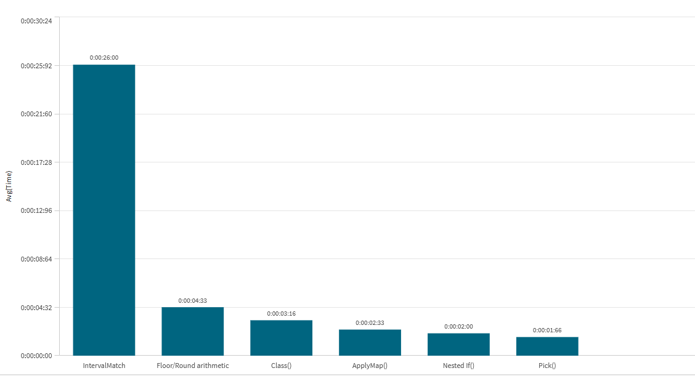

Bucketing a continuous value into bands — revenue tiers, age groups, score ranges — is one of
the most common things you'll do in a load script. Qlik even ships a dedicated function for it:
Class(). But it's far from the only way, and it isn't the fastest. I lined up six
different methods, ran them against 15 million rows, and timed each one.
The conclusion up front: the method you reach for matters less for correctness than for maintainability — but there is one method you should avoid on large data, and the built-in function is squarely in the middle of the pack.
The six methods
The task: classify a Revenue value (ranging 0–1M) into bands of a fixed width.
Here are the six approaches, all producing the same buckets.
1. Class() — the built-in
Qlik's purpose-built function. Pass the value and the bucket width, and it returns a dual
whose text is the range (e.g. 200000 <= x < 400000) and whose number is
the lower bound.
LOAD
TransID,
Class(Revenue, 200000) AS RevClass
RESIDENT Transactions;2. Floor / Round arithmetic
Do the maths yourself. Floor(Revenue/width) gives the bucket index; multiply back
out to build a readable label, and wrap it in a Dual() so it still sorts numerically.
LOAD
TransID,
Dual(Num(Floor(Revenue/200000)*200000,'#,##0') & ' - ' &
Num(Floor(Revenue/200000)*200000+200000,'#,##0'),
Floor(Revenue/200000)) AS RevClass
RESIDENT Transactions;3. Nested If()
The brute-force approach everyone writes first. Readable for a handful of bands, painful past that.
LOAD
TransID,
If(Revenue<200000,'Very Low',
If(Revenue<400000,'Low',
If(Revenue<600000,'Medium',
If(Revenue<800000,'High','Very High')))) AS RevClass
RESIDENT Transactions;4. Pick()
Compute the bucket index with Floor, clamp it with RangeMin so the top
band catches everything above the last threshold, then Pick() the matching label.
LOAD
TransID,
Pick(RangeMin(Floor(Revenue/200000)+1, 5),
'Very Low','Low','Medium','High','Very High') AS RevClass
RESIDENT Transactions;5. ApplyMap()
Keep the bucket index calculation, but resolve the label from a mapping table. The band
definitions live in one tidy INLINE block, and the third argument handles the
catch-all for anything above the top bucket.
BucketMap:
MAPPING LOAD * INLINE [
idx, label
0, Very Low
1, Low
2, Medium
3, High
4, Very High
];
LOAD
TransID,
ApplyMap('BucketMap', Floor(Revenue/200000), 'Very High') AS RevClass
RESIDENT Transactions;6. IntervalMatch
The relational approach: define a Bins table with lower/upper bounds, then use
IntervalMatch to associate every revenue value with the band it falls into, and
join the label back on.
Bins:
LOAD * INLINE [
RevClass, LowerBound, UpperBound
Very Low, -1E64, 200000
Low, 200000, 400000
Medium, 400000, 600000
High, 600000, 800000
Very High, 800000, 1E64
];
Tmp_Test:
IntervalMatch(Revenue)
LOAD LowerBound, UpperBound RESIDENT Bins;
LEFT JOIN (Tmp_Test)
LOAD LowerBound, UpperBound, RevClass RESIDENT Bins;Test setup
All six ran on the same 15 million row Transactions table via
RESIDENT loads, each wrapped in a small sLog timing subroutine that records start
and end timestamps. Revenue was a random value between 0 and 1,000,000. I ran the
whole battery twice: once splitting into 5 categories (200k-wide bands) and
once into 10 categories (100k-wide bands), to see whether the number of bands
changed the ranking.
Results — 5 categories

| Method | Avg time | Notes |
|---|---|---|
| Nested If() | ~1.5 s | Fastest |
| Pick() | ~1.8 s | |
| ApplyMap() | ~2.0 s | |
| Class() | ~3.7 s | The built-in |
| Floor / Round arithmetic | ~4.0 s | |
| IntervalMatch | ~28 s | ~15× slower than the pack |
Results — 10 categories

| Method | Avg time | Notes |
|---|---|---|
| Pick() | ~1.7 s | Fastest |
| Nested If() | ~2.0 s | Slower than at 5 bands |
| ApplyMap() | ~2.3 s | |
| Class() | ~3.2 s | The built-in |
| Floor / Round arithmetic | ~4.3 s | |
| IntervalMatch | ~26 s | Again, by far the slowest |
What stands out
IntervalMatch is in a league of its own — the wrong league. At roughly
27 seconds it's about 15× slower than everything else, and it barely moved between 5 and 10
bands. That's expected: IntervalMatch compares every one of the 15 million revenue
values against every interval, then materialises a join. It's a genuinely relational operation
with the cost to match. Reserve it for cases where the bands genuinely overlap or are
data-driven and can't be expressed arithmetically — never for simple fixed-width bucketing.
LEFT JOIN into a new resident table. In a
real model you'd typically resolve the bands against the distinct revenue values once
and LEFT JOIN the result straight onto the fact — not build a fresh resident copy
per row. Where revenue has far fewer distinct values than rows, that alone cuts the cost
substantially. Even with a fairer setup, though, it won't catch the arithmetic methods on
fixed-width bands — and that's not what it's for.
Pick() and Nested If() trade the top spot. Both stay near the bottom of the
chart. Notice that Nested If() got slower going from 5 to 10 bands (1.5 s → 2.0 s),
because each extra band is another comparison every row must walk through. Pick()
barely moved — its cost is one Floor and an array lookup regardless of how many bands
there are. On a band count of 20 or 50, that gap only widens.
Class() is unremarkable. The dedicated function lands mid-pack at ~3–4 seconds, roughly twice the cost of the leaders. It's not slow, and it's wonderfully concise, but it carries the overhead of producing a fully-formatted dual range string for every row.
My pick: ApplyMap()
Performance isn't the only axis, and for everyday work it's rarely the deciding one. My personal
preference is ApplyMap(), and the benchmark backs that up as a sensible default — it
sits comfortably among the fastest three at ~2 seconds, just a hair behind Pick().
What makes it the nicest to live with is the separation of definition from logic. Your band labels
sit in one clean INLINE block. Adding, renaming, or re-bounding a band is a one-line
edit in an obvious place — no re-counting the nesting on a wall of If()s, no keeping a
positional Pick() list in sync with anything. You can even load that mapping from a QVD
or spreadsheet and let the business own the band definitions without touching the script.
ApplyMap(), always set the third argument (the default). It's your catch-all for
values above the top bucket — and a safety net against a key your map doesn't cover silently
returning null.
Bottom line
- Never use IntervalMatch for fixed-width bands. It's an order of magnitude slower and the wrong tool.
- Pick() is the raw-speed winner and scales best as band count grows.
- Class() is fine but unremarkable — concise, mid-pack speed.
- ApplyMap() is the best all-rounder — near the top on speed, far ahead on readability and maintenance.
Reach for the built-in when you want a quick one-liner and don't care about the exact labels.
Reach for ApplyMap() when the bands will live in production and someone — maybe you,
a year from now — will need to change them.